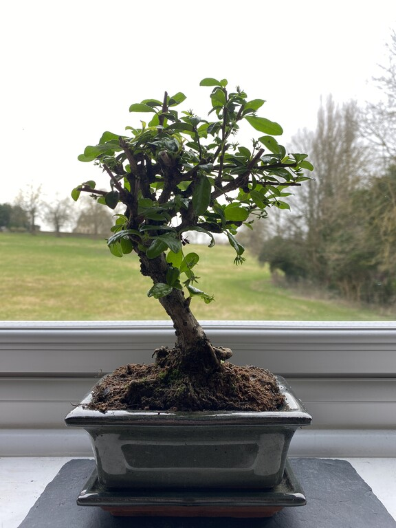

There are a number of factors that make bonsai plants suitable for online sales. Customers benefit greatly from the convenience of internet buying. Customers can explore and purchase things from the comfort of their own homes via an online store, eliminating the need to travel to a physical location. This is especially appealing to bonsai fans who do not have access to a local bonsai shop or prefer the ease of shopping online. Because who doesn't love a plant that's small enough to fit in your palm, but still requires the same level of attention and care as a full-size tree? And now you can buy them online because technology is amazing!

Another significant advantage of selling bonsai plants online is the increased reach. You may sell to people all over the world with an internet store, which can assist to dramatically improving your sales and audience. Given the fact that you might reach a considerably wider audience than you could with just a physical location is crucial for small businesses in particular.
The ability to buy and sell bonsai plants online has also been greatly aided by technology. E-commerce platforms such as Shopify make it simple for businesses to set up an online store and manage their sales, while social media and other marketing tools enable them to reach out to and engage with customers. Technology has also made it easier for businesses to engage with customers and deliver good customer service, both of which can contribute to the development of trust and loyalty.
In summary, bonsai plants are ideally suited for online sales due to the convenience, increased reach, and technologically driven prospects of this medium. By taking advantage of the service, anyone can create a flourishing online bonsai business that appeals to a large audience and provides customers with a convenient and pleasurable buying experience.
In a variety of ways, technology has had a tremendous impact on daily living and online enterprises, and the bonsai industry has been no exception. Here are some examples of how technology has impacted various areas: